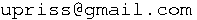

Die Mandoline ist das Instrument des Jahres 2023! Auf dieser Seite entsteht
meine private Linksammlung zu allem, was so in Braunschweig in diesem Jahr mit Mandolinen
passiert. Ergänzungsvorschläge gerne an Uta Priss
().
Termine
am 2. Samstag jedes Monats, Bistro des KufA-Hauses